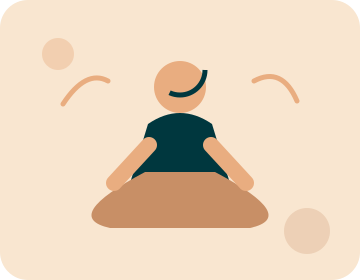
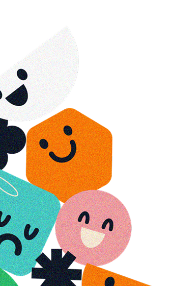
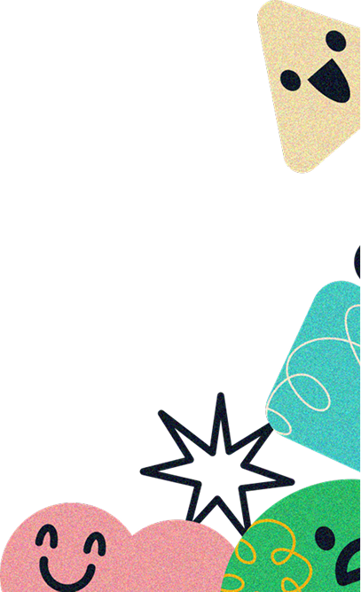
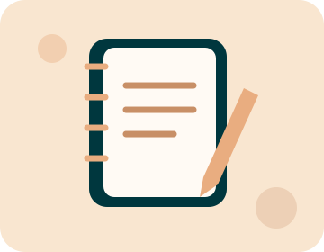
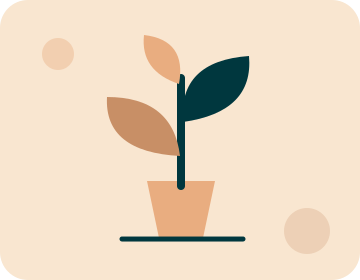

A gentle grounding exercise
Notice five things you can see, four you can feel, three you can hear, two you can smell, and one you can taste. Move slowly and stop if uncomfortable.

Resources


Notice five things you can see, four you can feel, three you can hear, two you can smell, and one you can taste. Move slowly and stop if uncomfortable.

Write down what brought you to seek support, what you hope to change, and questions you want to ask. You do not need to explain everything at once.

Choose one small daily pause: a short walk, time away from screens, or a consistent bedtime routine. Start with something realistic.
Explore services and contact us with general questions. Online booking is not yet enabled.
No. Coaching focuses on goals and habits. Therapy is clinical support from an appropriately qualified professional.
No. They are general educational suggestions, not diagnosis or treatment. Consult a qualified professional for personalized advice.